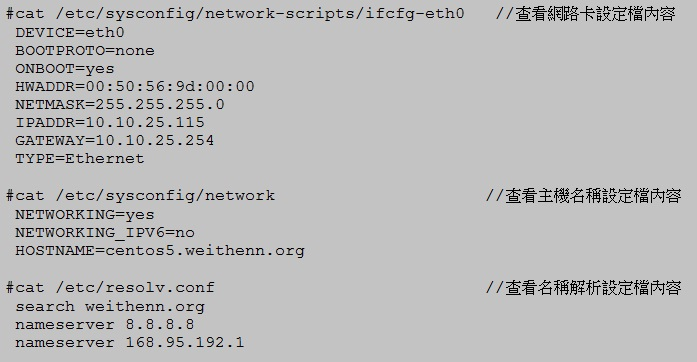
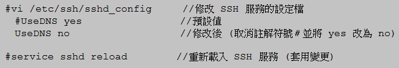

也紀念我們永遠的朋友 李士傑先生（Shih-Chieh Ilya Li）。
CentOS 基礎設定（上）
前言
Red Hat Enterprise Linux 為 Red Hat 公司推薦使用於企業伺服器網路服務上的 Linux 發行版本，通常大多數的人會將此 Linux 發行版本簡稱為 RHEL（雖然 Red Hat 公司官方並不建議這樣簡稱）。在正常的情況下 RHEL 大約以每 18 ~ 24 個月的頻率，發佈下一版的作業系統。但是實際運作上 RHEL 作業系統版本的發行頻率，取決於 Fedora Linux 的更新。Fedora Linux 為 Red Hat 公司贊助的知名開放原始碼計畫，Red Hat 公司會將許多新技術先行導入至 Fedora Linux 發行版本中，待經過一段時間測試至穩定階段而且符合企業需求後，便會將該技術加入至下一個發行的 RHEL 版本中。每當 Fedora Linux 發行 3 個版本後大約就會發佈 1 個 RHEL 新版本
而本文所要介紹的 CentOS (Community ENTerprise Operating System) 為眾多 Linux 發行版本之一。CentOS 其源碼來自 RHEL 作業系統的開放原始碼，將其源碼重新編譯而成的，移除了無法自由使用的商標及 Red Hat 所擁有的封閉原始碼軟體。由於 CentOS Linux 與 Red Hat Enterprise Linux 具有大量相同的原始碼內容，因此也適合在需要高度穩定性的企業營運環境。
目前有些中小企業的 IT 人員為了建置預算上面的考量使用 CentOS Linux 發行版本來替代 RedHat Linux 企業版本。但是相對來說使用 CentOS Linux 發行版本除了得不到商業支援以外，當然也不包含 Red Hat 公司所擁有的封閉原始碼軟體。因此建議 IT 人員在使用 CentOS Linux 發行版本來建置企業網路服務以前，除了要先了解所使用的硬體伺服器是否支援 CentOS Linux 之外，更要了解所架設的商業服務是否會使用到 Red Hat 公司封閉原始碼軟體。
CentOS Linux 作業系統版本命名規則分為二個部份，分別是主要版本及次要版本來進行版本表示。其中主要及次要版本號碼，則是相對應於紅帽公司所發行的 RHEL 作業系統主要版本與更新版本號碼，例如 CentOS 5.5 版本便是相對應於 RHEL 5 update 5 版本。
實作環境
* CentOS 5.5 32bit (Kernel 2.6.18-194.el5)
建立一般使用者帳號
為了減少不必要的篇幅內容，本文並不會說明如何從頭開始安裝 CentOS Linux 作業系統，建議有興趣的讀者可以參考官方使用者手冊 CentOS-5 Documentation，相信具備基本知識的使用者一定能夠順利無誤將 CentOS 作業系統安裝起來。筆者只有一點安裝建議，那就是在安裝過程中，/var 此掛載點的使用空間不要給太少，以免後續維護時發生問題。原因在於 /var 掛載點除了為預設所有記錄檔存放處以外，更重要的是當後續系統執行更新相關套件時，其暫存的資料便是存放於 /var/cache/yum 內。因此 /var 掛載點空間太小將可能導致套件更新失敗的情況發生。
在安裝 CentOS 作業系統過程中會要求您順便設定 root 管理者帳號，作業系統安裝完成後請使用 root 管理者帳號登入系統。Linux 系統管理者應該具備如同管理 Microsoft Windows 主機時同樣的作業系統安全性觀念，也就是要先建立一般使用者帳號來登入系統進行操作，待需要執行的動作需要提升至管理者權限時，才著手轉換將權限提升。因此持同樣的安全觀念當您首次登入 CentOS 作業系統後，建議您先為管理者建立一般使用者帳號後，再將該使用者帳號加入管理者群組當中。下列操作動作為先建立使用者家目錄資料夾，因為筆者習慣將使用者家目錄都集中於一個目錄內以便後續方便管理（預設使用者家目錄為存放至 /home 下）之後透過指令 adduser 建立一般使用者帳號 weithenn（-d 參數為指定該使用者家目錄位置），接著使用指令 passwd 設定使用者密碼，最後則是設定將該使用者加入管理者群組 wheel 當中。
▲ 圖1 新增使用者帳號、設定使用者密碼並加入 wheel 群組
設定網路功能
建立好使用者帳號後接下來便是設定 CentOS 的網路功能，在本文設定中網路功能是以設定固定 IP 位址來進行說明。可以透過二種方式設定固定 IP 位址，一為使用指令 system-config-network 來進行互動設定，另外一種方式則為手動將固定 IP 位址、網路遮罩等相關資訊寫入 “ifcfg-eth0” 網卡設定檔中，而預設閘道及主機名稱則是寫入 “network” 設定檔中，最後則是將 DNS 名稱解析資訊寫入 “resolve.conf” 設定檔中。下列操作步驟先以 system-config-network 指令進行互動設定，之後再解釋如何手動將網路資訊寫入設定檔的方式：
1. 執行 system-config-network指令使系統進入互動設定視窗中，如圖2
2. 選擇【Edit Devices】 後此時會顯示安裝於此主機的網路卡清單，本例為選擇唯一的一張網路卡【eth0 （eth0） – VMware VMXNET3 Ethernet Controller】，如圖3
3. 將「Use DHCP」勾選項目取消並且將固定 IP 位址、網路遮罩、預設閘道等資訊填入後按下【OK】（如圖4）
4. 此時畫面回到剛才選擇網卡的視窗（以便您要設定多片網路卡設定），接著按下【Save】回到原始互動設定視窗中
5. 接著選擇【Edit DNS configuration】來進入設定 DNS 視窗，請填入主機名稱、DNS 伺服器 IP 位址等資訊後按下【OK】，如圖5
6. 最後則是按下【Save&Quit】確定儲存剛才的設定後離開互動設定視窗

▲ 圖2 使用指令 system-config-network 進入互動設定視窗
透過上述互動設定將網路資訊設定完成後, 作業系統會將相關網路設定值寫入相對應的設定檔中，例如固定 IP 位址、網路遮罩、預設閘道資訊寫入至 “/etc/sysconfig/network-scripts/ifcfg-eth0” 網卡設定檔中，而主機名稱則寫入 “/etc/sysconfig/network” 設定檔內，而 DNS 名稱解析的網路資訊則是寫入 “/etc/resolv.conf” 設定檔內。筆者建議若您的主機安裝多片網路卡時，請將預設閘道資訊寫入至 “/etc/sysconfig/network” 設定檔內為比較洽當的設定。
所以我們可以在互動設定完畢後，查看相關網路設定檔內容時可以看到相關網路資訊均已寫入。因此您可以依個人喜好來決定要如何設定網路資訊至 CentOS 作業系統中，看您是要使用指令 system-config-network 以互動方式來設定網路資訊，或者將相關網路設定值寫入相關設定檔內也是可行的方法。就筆者個人習慣來說，會使用互動設定來設定相關資訊，並且於設定完成後查看相關設定檔內容，確定無誤即可（可以省去記憶相關設定檔內容中參數名稱）。

▲ 圖6 查看網路設定檔及 DNS 名稱解析設定檔內容
當上述設定完成後可能會發現 CentOS 主機仍然無法連上網際網路。雖然透過互動設定已經設定好相關網路資訊，但作業系統目前仍未套用變更相關設定（例如套用預設閘道設定值）。建議您可以執行指令 reboot，重新啟動主機來自動套用剛才設定的相關網路資訊。
當您將 CentOS 主機重新啟動完成之後，您可以使用 ping 指令來判斷主機是否能順利連上網際網路及進行名稱解析的動作，或者藉此判斷此台主機的網路通訊是卡在哪個環節上以便除錯。
修改 SELinux 安全增強機制
Linux 作業系統從核心 2.6 版本開始預設會自動載入安全增強機制 SELinux ( Security-Enhanced Linux) 核心模組。SELinux 是由美國國家安全局 NSA (National Security Agency) 所開發，並且在 2000 年 12 月時將此核心模組發行給開放原始碼的開發社群，以便有效加強 Linux 整體安全性。
SELinux 為基於保護原則、作業系統中檔案結構及檔案權限的完整性原則所設計，此完整性原則可以有效針對入侵行為，以及企圖跨越系統安全架構等設計不良的應用程式對作業系統所造成的破壞，因此可以提供更安全的強制存取控制架構，來與作業系統的核心和主要子系統協同運作。在這樣的架構下相關的服務 (Daemon) 只能存取屬於該服務帳號所能存取的資料夾及檔案權限，若是超過所能存取的權限範圍則 SELinux 便會阻擋該服務的存取行為。所以若主機所架設的服務出現安全性漏洞導致被攻擊時 SELinux 能夠有效將攻擊所造成的損失降到最低。
簡單來說啟用了 SELinux 安全增強機制後的 Linux 作業系統，其檔案權限便不僅僅是傳統上的三種權限－讀取 r、寫入 w、執行 x－，及身份－擁有者 Owner、群組 Group、其它人 Others，而是整個主機內的檔案系統，將會套用更細微的權限及身份設定並且具有完整性架構。然而也因為 SELinux 安全增強機制及完整性原則，常常會造成 Linux 初學者因為不了解檔案系統及相關概念，進而導致設定相關網路服務時，因為違反了 SELinux 安全機制或者完整性原則，而導致網路服務無法啟動，或者無法存取系統資料（因為被 SELinux 安全機制給阻擋住了）。因此筆者通常會建議初學者可以先將此增強安全機制設定為警告通知，或者暫時關閉。等以後對於 CentOS 作業系統有更深的認識後再將此功能啟用。當然這樣的情況是自行測試或學習時，使用者若是用於企業營運時則強烈建議一定要開啟 SELinux 安全增強機制來提升及保護主機安全性。
要修改 SELinux 安全增強機制的設定，您可以透過修改 “/etc/sysconfig/selinux” 設定檔，或者使用指令 system-config-securitylevel 進入互動設定視窗進行設定之後再將主機重新啟動即可套用變更，SELinux 安全增強機制共有三種運作模式說明如下：
1. enforcing：啟動模式，SELinux 安全增強機制啟動將會阻擋不當的存取行為。
2. permissive：寬容模式，當系統發生違反 SELinux 安全增強機制時僅僅顯示警告訊息而不會實際進行阻擋的動作，此模式很適合有心學習 SELinux 機制的學習者。
3. disabled：禁用模式，完全將 SELinux 安全增強機制禁用。
筆者建議您可以將設定值修改為寬容模式 (permissive)，因為當您的操作行為違反 SELinux 安全增強機制時會顯示警告通知您，因此您可以有效學習到哪些操作或者哪些動作是會被 SELinux 阻擋哪些不會，這樣可以讓您日後真正開啟 SELinux 安全增強機制時，不致被卡住並且早日提升您所管理的主機系統整體安全性。您可以透過 sestatus 指令來判斷目前主機中 SELinux 的運作模式及狀態，此設定值變更後必須要將主機重新啟動才能套用變更，當重新啟動後請記得再次使用 sestatus 指令以便確認您的修改正確有效。
禁止 root 管理帳號遠端登入
在預設的情況下您可以直接使用 root 管理帳號來遠端登入 Linux 作業系統進行管理，然而在管理作業系統上通常安全性與便利性是相對的二個拉扯點。當您所管理的作業系統其操作便利性愈高則安全性通常會相對的降低。筆者在此建議您關閉 Linux 預設允許 root 管理者帳號可以遠端登入管理系統，原因有三：
1. 首先是您的主機將增加了被入侵的機會。在管理者帳號已知情形下，剩下就是嘗試登入密碼了，如此一來很容易遭受暴力猜測密碼攻擊。
2. 當一台主機有眾多管理者時大家皆使用 root 管理者帳號登入系統進行管理動作，則誰修改了某個檔案內容或執行了哪些動作均無法稽核，因為記錄的資料都是 root。
3. 最後則是直接使用 root 管理者帳號登入系統進行管理，若是在操作過程中不慎下錯指令時有極大的可能會把系統給毀掉。例如原本是想刪除根目錄下的 test 資料夾 rm –rf /test 若不慎在操作時不小心多個空格 rm –rf / test，則對於作業系統來說是要刪除根目錄 （/） 及目前所在的 test 資料夾。
要將 CentOS 主機預設允許 root 管理者帳號遠端登入的功能關閉，可以透過修改 “sshd_config” 設定檔後再重新載入 SSH 服務即可套用變更，套用完成後您可以測試是否無法使用 root 管理帳號遠端登入主機以便確定修改是否生效。
讀者可能覺得很奇怪，遠端登入主機時輸入帳號後怎麼要等很久才能輸入密碼？會有這樣的狀況發生是因為 CentOS 在啟動 SSH 服務時預設會配合使用名稱解析所導致，若您主機運作的網路環境中名稱解析服務已經運作正常則不會有此問題發生。若發生這樣的問題請檢查 DNS 名稱解析中反向解析對於此主機的解析情況，若此台主機所在的網路環境中並沒有反向名稱解析的機制，您可取消 SSH 服務中預設會使用到名稱解析的動作即可解決此一問題。

▲ 圖11 取消 SSH 服務使用名稱解析服務
結語
本文進行至此已經建立好一般使用者帳號並將其加入管理者群組，並且設定好 CentOS 主機的網路連通資訊（固定 IP 位址、網路遮罩、預設閘道、DNS 名稱解析、主機名稱），並且確認主機可連結至網際網路上的機器，其網路功能運作無誤。再來則是將 SELinux 安全增加機制設定為寬容或禁用模式，以免在您剛開始學習 CentOS 作業系統時遭遇困難，最後則是關閉 root 管理者帳號，關閉遠端登入系統的權限以及關閉 SSH 服務反向解析的機制。此時的 CentOS 主機已經具備網路連通能力而主機的管理者也可以遠端管理主機了。
在下一篇基礎設定文章中，首先會探討如何透過 RunLevel 建立良好的使用者操作 Shell 環境。接下來則是建立良好的編輯檔案環境及設定 sudo 來限制及記錄管理者帳號 root 的使用記錄。最後則是談到設定套件管理工具 YUM ，將下載套件的來源指向至台灣本地鏡像網站，以加快軟體套件下載時間。
您也許有興趣閱讀以下文章:
- CentOS 基礎設定（下） - 2011-07-20
- CentOS 基礎設定（中） - 2011-07-11
專欄總覽


E-Mail：contact@openfoundry.org Address：台北市南港區研究院路2段128號 中央研究院資訊科學研究所 . 隱私權條款. 使用條款